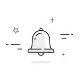

<div class="notification-container">
  <!-- Notification Bell Icon Trigger with Badge -->
  <div class="notification-bell-wrapper" (click)="toggleDrawer()">
    <i class="icon-bell notification-icon"></i>
    <div class="count">10</div>
  </div>

  <!-- Notification Side Drawer Overlay (Appears below the header) -->
  @if (isOpen) {
    <div class="notification-backdrop" (click)="toggleDrawer()"></div>
    <aside class="notification-side-drawer">
      <div class="drawer-header">
        <h2 class="drawer-title">Notifications</h2>
        <div class="drawer-actions-top">
          <button type="button" class="mark-read-btn">Mark all as read</button>
          <i class="fa-solid fa-gear settings-icon" (click)="goToSettings()"
          ></i>
          <i class="fa-solid fa-xmark close-drawer-icon" (click)="toggleDrawer()"></i>
        </div>
      </div>

      <!-- Filter Pills Bar -->
      <div class="notification-filters">
        <button type="button" class="filter-pill active">All <span class="badge-count">10</span></button>
        <button type="button" class="filter-pill">Sport</button>
        <button type="button" class="filter-pill">Casino</button>
        <button type="button" class="filter-pill">Important <span class="badge-count">10</span></button>
      </div>

      <!-- Drawer Body / Empty State -->
      <div class="drawer-body">
        <div class="empty-state">
          <div class="empty-bell-graphic">
            
          </div>
          <h3>No Notifications Yet!</h3>
          <p>Once we have updates on your favorite games or exciting offers, you'll see them here. Stay tuned!</p>
        </div>
      </div>
    </aside>
  }
</div>